Week 0: R Graphics
Rodney Dyer (worked example) and Helene Wagner (adaptation)
2020-06-08
Week0_Graphics.Rmd1. Overview
This worked example is adapted from “Applied Population Genetics” by Rodney Dyer. The entire book is available here: http://dyerlab.github.io/applied_population_genetics/index.html
One of the most critical features of data analysis is the ability to present your results in a logical and meaningful fashion. R has built-in functions that can provide you graphical output that will suffice for your understanding and interpretations. However, there are also third-party packages that make some truly beautiful output. In this section, both built-in graphics and graphical output from the ggplot2 library are explained and highlighted.
We are going to use the venerable iris dataset that was used by Anderson (1935) and Fisher (1936). These data are measurements of four morphological variables (Sepal Length, Sepal Width, Petal Length, and Petal Width) measured on fifty individual iris plants from three recognized species. Here is a summary of this data set.
summary(iris)
## Sepal.Length Sepal.Width Petal.Length Petal.Width
## Min. :4.300 Min. :2.000 Min. :1.000 Min. :0.100
## 1st Qu.:5.100 1st Qu.:2.800 1st Qu.:1.600 1st Qu.:0.300
## Median :5.800 Median :3.000 Median :4.350 Median :1.300
## Mean :5.843 Mean :3.057 Mean :3.758 Mean :1.199
## 3rd Qu.:6.400 3rd Qu.:3.300 3rd Qu.:5.100 3rd Qu.:1.800
## Max. :7.900 Max. :4.400 Max. :6.900 Max. :2.500
## Species
## setosa :50
## versicolor:50
## virginica :50
##
##
## I will also provide examples using two different plotting approaches. R has a robust set of built-in graphical routines that you can use. However, the development community has also provided several additional graphics libraries available for creating output. The one I prefer is ggplot2 written by Hadley Wickham. His approach in designing this library a philosophy of graphics depicted in Leland Wilkson’s (2005) book The Grammar of Graphics. As I understand it, the idea is that a graphical display consists of several layers of information. These layers may include:
- The underlying data.
- Mapping of the data onto one or more axes.
- Geometric representations of data as points, lines, and/or areas.
- Transformations of the axes into different coordinate spaces (e.g., cartesian, polar, etc.) or the data onto different scales (e.g., logrithmic)
- Specification of subplots.
In the normal plotting routines discussed before, configuration of these layers were specified as arguments passed to the plotting function (plot(), boxplot(), etc.). The ggplot2 library takes a different approach, allowing you to specify these components separately and literally add them together like components of a linear model.
Required packages:
2. Univariate plots
2.1. Barplots and histograms
Univariate data can represent either counts (e.g., integers) of items or vectors of data that have decimal components (e.g., frequency distributions, etc.). If the sampling units are discrete, then a the barplot() function can make a nice visual representation. Here is an example using some fictions data.
## Bob Alice Jane Fred Barney Lucy
## 2 3 6 3 2 4From this, a barplot can be constructed where the x-axis has discrete entities for each name and the y-axis represents the magnitude of whatever it is we are measuring.
barplot(x, xlab = "People", ylab = "Thinn-A-Ma-Jigs")
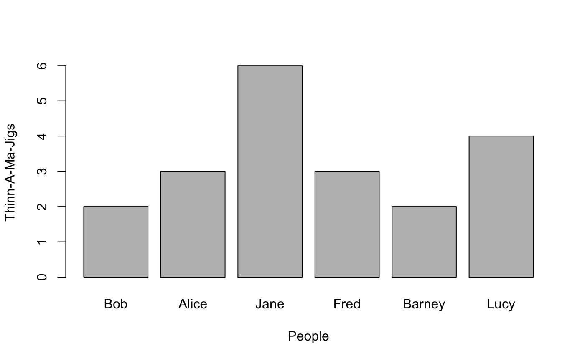
Notice here that I included labels for both the x- and y-axes. You do this by inserting these arguments into the parameters passed to the barplot() (it is the same for all built-in plotting as we will see below).
To use ggplot for displaying this, you have to present the data in a slightly different way. There are shortcuts using the qplot() function but I prefer to use the more verbose approach. Here is how we would plot the same output using ggplot.
library(ggplot2) df <- data.frame(Thinn_A_Ma_Jigs=x,names=names(x)) ggplot( df, aes(x=names,y=Thinn_A_Ma_Jigs)) + geom_bar(stat="identity")
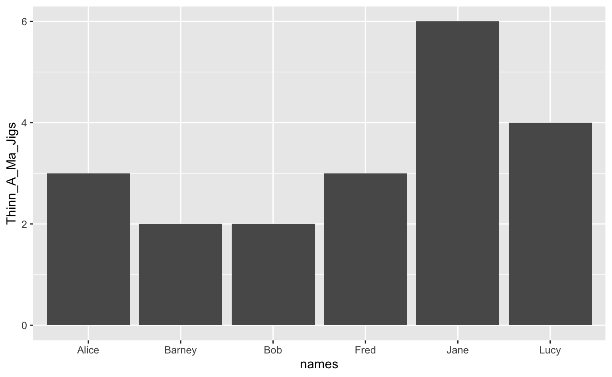
There are a couple of things to point out about this.
- This is a compound statement, the plotting commands are literally ‘added together’.
- The
ggplot()function specifies adata.framefrom which your data will be extracted. - The
aes()component within theggplot()function describes the aesthetics of the plot. This is how you designate which variable columns in thedata.framewill be on the x- and y- axes, colors, plot shapes, categories, etc. - To the basic description of the data and aesthetics, a geometry is added, that of a barplot. If necessary, you can pass additional information to the
geom_bar()function. In this case, I had to tell it that you use the raw datastat='identity'instead of trying to summarize many observations.
- The axis labels are taken directly from the names of the columns in the
data.frame.
If the data on the x-axis is not discrete but measured on a single variable, then the hist() function can take the data and categorize it into groups based upon the density of the underlying data.
h <- hist(iris$Sepal.Length)
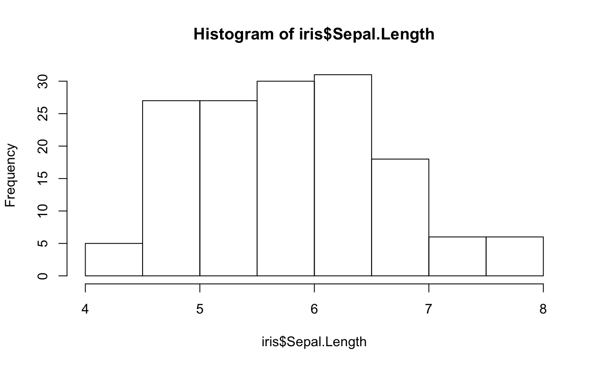
The hist() function itself returns a bit of information that may be of interest. It is not necessary that you capture these data, R will ignore it if you do not assign it to a variable. What is of interest though is that it returns a list() object with the following keys:
names(h)
## [1] "breaks" "counts" "density" "mids" "xname" "equidist"The data within these keys can be accessed directly as:
h## $breaks
## [1] 4.0 4.5 5.0 5.5 6.0 6.5 7.0 7.5 8.0
##
## $counts
## [1] 5 27 27 30 31 18 6 6
##
## $density
## [1] 0.06666667 0.36000000 0.36000000 0.40000000 0.41333333 0.24000000 0.08000000
## [8] 0.08000000
##
## $mids
## [1] 4.25 4.75 5.25 5.75 6.25 6.75 7.25 7.75
##
## $xname
## [1] "iris$Sepal.Length"
##
## $equidist
## [1] TRUE
##
## attr(,"class")
## [1] "histogram"and provide the basic information on how to construct the histogram as shown below. The values defined for the break locations for each of the bars and the midpoints are the default ones for the hist() function. If you wish, you can provide the number of breaks in the data, the location of the breaks, including the lowest and highest terms, plot as a count versus a frequency, etc.
The corresponding ggplot approach is
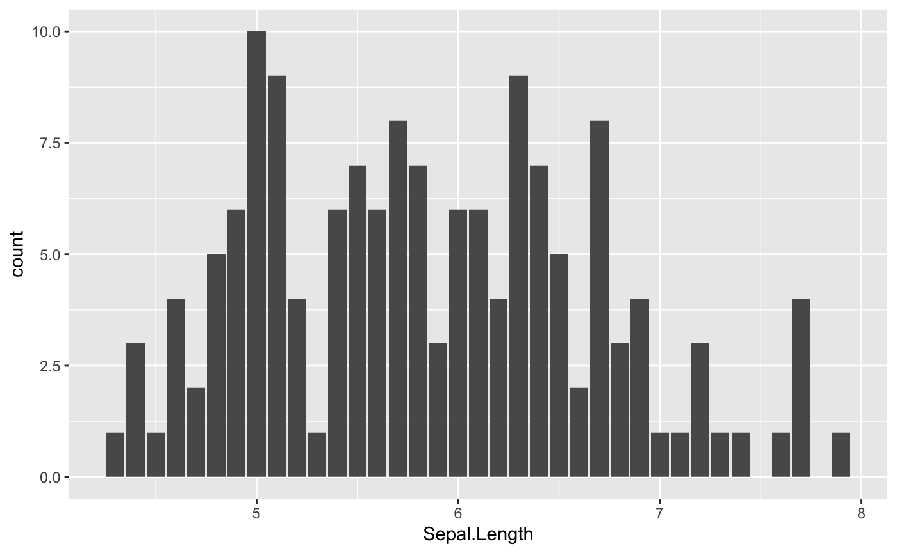
which also takes a few liberties with the default binning parameters.
By default, both the R and ggplot approches make a stab at creating enough of the meta data around the plot to make it somewhat useful. However, it is helpful if we add a bit to that and create graphics that suck just a little bit less. There are many options that we can add to the standard plot command to make it more informative and/or appropriate for your use. The most common ones include:
-
xlabChange the label on the x-axis
-
ylabChange the lable on the y-axis -
mainChange the title of the graph -
colEither a single value, or a vector of values, indicating the color to be plot. -
xlim/ylimThe limits for the x- and y-axes.
Additional options are given in tabular form in the next section.
Here is another plot of the same data but spiffied up a bit.
x <- hist( iris$Sepal.Length,xlab="Sepal Length (cm)", ylab="Count", main="", col="lightblue")

A few things to notice:
- The main title over the top of the image was visually removed by assigning an empty characters string to it.
- The color parameter refers to the fill color of the bars, not the border color.
In ggplot we add those additional components either to the geometry where it is defined (e.g., the color in the geom_bar) or to the overall plot (as in the addition of labels on the axes).
ggplot( iris, aes(x=Sepal.Length)) + geom_bar(fill="lightblue") + xlab("Sepal Length (cm)") + ylab("Count")
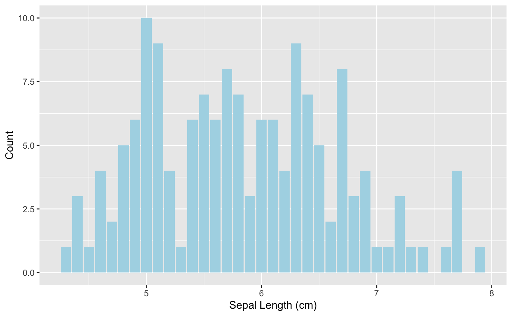
2.2. Plotting Parameters
There are several parameters common to the various plotting functions used in the basic R plotting functions. Here is a short table of the most commonly used ones.
| Command | Usage | Description |
|---|---|---|
| bg | bg=“white” | Sets the background color for the entire figure. |
| bty | bty=“n” | Sets the style of the box type around the graph. Useful values are “o” for complete box (the default), “l”, “7”, “c”, “u”, “]” which will make a box with sides around the plot area resembling the upper case version of these letters, and “n” for no box. |
| cex | cex=2 | Magnifies the default font size by the corresponding factor. |
| cex.axis | cex.axis=2 | Magnifies the font size on the axes. |
| col | col=“blue” | Sets the plot color for the points, lines, etc. |
| fg | fg=“blue” | Sets the foreground color for the image. |
| lty | lty=1 | Sets the type of line as 0-none, 1-solid, 2-dashed, 3-dotted, etc. |
| lwd | lwd=3 | Specifies the width of the line. |
| main | main=“title” | Sets the title to be displayed over the top of the graph. |
| mfrow | mfrow=c(2,2) | Creates a ‘matrix’ of plots in a single figure. |
| pch | pch=16 | Sets the type of symbol to be used in a scatter plot. |
| sub | sub=“subtitle” | Sets the subtitle under the main title on the graph. |
| type | type=“l” | Specifies the type of the graph to be shown using a generic plot() command. Types are “p” for points (default), “l” for lines, and “b” for both. |
| xlab | xlab=“Size (m)” | Sets the label attached to the x-axis. |
| ylab | ylab=“Frequency” | Sets the label attached to the y-axis. |
2.3. Density Plots
Another way of looking at the distribution of univariate data is through the use of the density() function. This function takes a vector of values and creates a probability density function of it returning an object of class “density”.
d <- density( iris$Sepal.Length) attributes(d)
## $names
## [1] "x" "y" "bw" "n" "call" "data.name"
## [7] "has.na"
##
## $class
## [1] "density"The density() function takes the univariate data and fits its density (internally represented by d$y) along the range of values (in d$x).
A plot can be produced using d as the variables as follows (with a bit of extra plotting parameters as depicted in the previous table).
plot( d, col = "red", lwd = 2, xlab = "Value of X", ylab = "Frequency", bty = "n", main = "Density Plot")
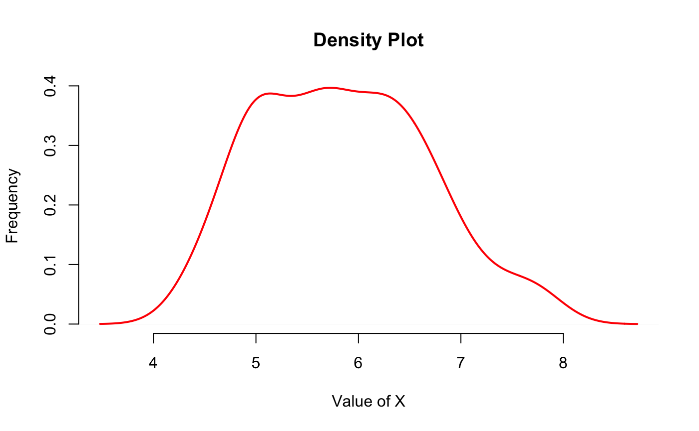
The corresponding ggplot approach is:
ggplot( iris, aes(x=Sepal.Length)) + geom_density()
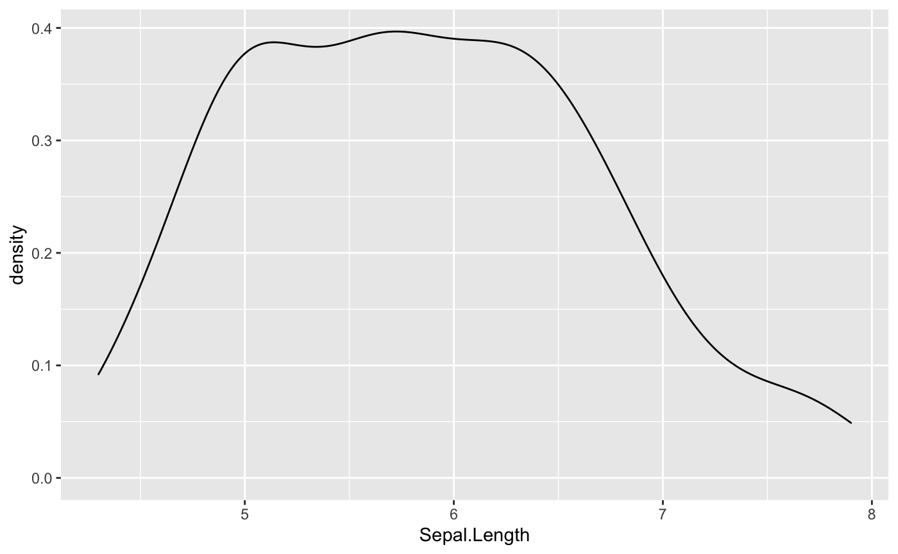
3. Bivariate plots
3.1. Overlaying Plots by grouping
The data in the previous density plot represents the sepal lengths across all three iris species. It may be more useful to plot them as the density of each species instead of combined. Overlaying plots is a pretty easy feature built into the default R plotting functionalities.
Lets look at the data and see if the mean length differs across species. I do this using the by() command, which takes three parameters; the first parameter is the raw data you want to examine, the second one is the way you would like to partition that data, and the third one is the function you want to call on those groupings of raw data. This general form
by( data, grouping, function )
mixing both data and functions to be used, is pretty common in R and you will see it over and over again. The generic call below asks to take the sepal data and partition it by species and estimate the mean.
by( iris$Sepal.Length, iris$Species, mean)
## iris$Species: setosa
## [1] 5.006
## ------------------------------------------------------------
## iris$Species: versicolor
## [1] 5.936
## ------------------------------------------------------------
## iris$Species: virginica
## [1] 6.588So there may be differences. Lets pull the data out and create density plots for each.
d.setosa <- iris$Sepal.Length[ iris$Species=="setosa" ] d.versicolor <- iris$Sepal.Length[ iris$Species=="versicolor" ] d.virginica <- iris$Sepal.Length[ iris$Species=="virginica" ] d.se <- density( d.setosa ) d.ve <- density( d.versicolor ) d.vi <- density( d.virginica )
I can now plot the densities independently. After the first plot() function is called, you can add to it by using lines() or points() function calls. They will overlay the subsequent plots over the first one. One of the things you need to be careful of is that you need to make sure the x- and y-axes are properly scaled so that subsequent calls to points() or lines() does not plot stuff outside the boundaries of your initial plot.
Here I plot the setosa data first, specify the xlim (limits of the x-axis), set the color, and labels. On subsequent plotting calls, I do not specify labels but set alternative colors. Then a nice legend is placed on the graph, the coordinates of which are specified on the values of the x- and y-axis (I also dislike the boxes around graphic so I remove them as well with bty="n").
plot(d.se,xlim=c(4,8),col="red", lwd=2, bty="n", xlab="Sepal Length (cm)", main="Sepal Lengths") lines( d.ve, xlim=c(4,8), col="green",lwd=2, bty="n") lines( d.vi, xlim=c(4,8), col="blue", lwd=2, bty="n") legend( 6.5,1.1,c("I. setosa", "I. versicolor", "I. virginica"), col=c("red","green","blue"), lwd=2,bty="n")
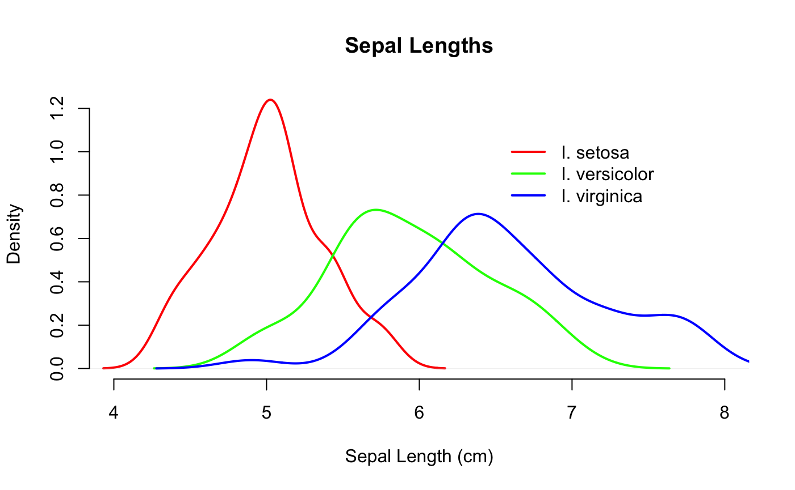
A lot of that background material is unnecessary using geom_density() because we can specify to the plotting commands that the data are partitioned by the values contained in the Species column of the data.frame. This allows us to make this plot
ggplot(iris, aes(Sepal.Length,color=Species)) + geom_density()
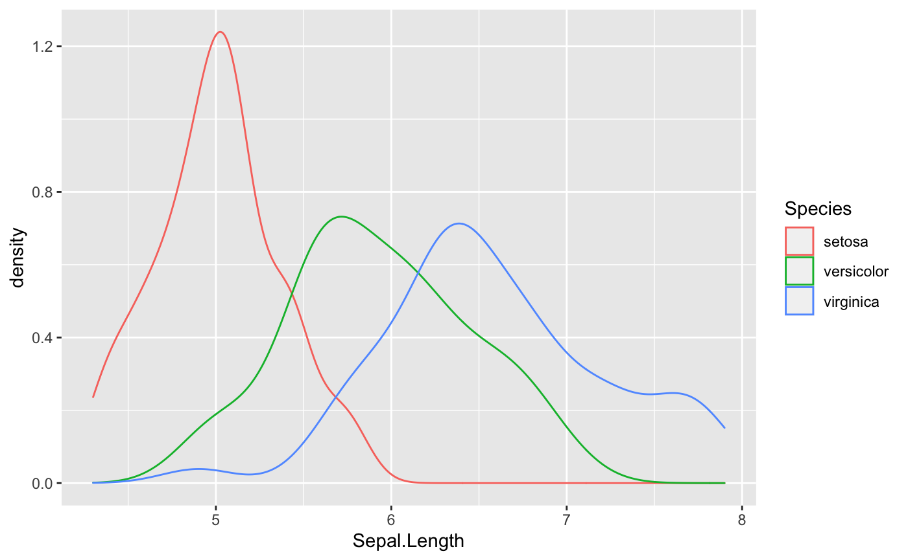
or a correpsonding one using fill=Species instead (I set the alpha transparency to allow you to see the plots in the background).
ggplot(iris, aes(Sepal.Length,fill=Species)) + geom_density( alpha=0.8)
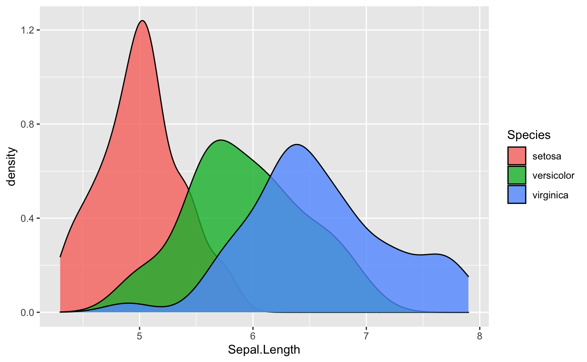
We can use the barplot() function here as well and either stack or stagger the density of sepal lengths using discrete bars.
Here I make a matrix of bins using the hist() function with a specified set of breaks and then use it to plot discrete bin counts using the barplot() function. I include this example here because there are times when you want to produce a stacked bar plot (rarely) or a staggered barplot (more common) for some univariate data source and I always forget how to specifically do that.
breaks <- seq(4,8,by=0.2) h.se <- hist(d.setosa, breaks=breaks, plot = FALSE) h.ve <- hist(d.versicolor, breaks=breaks, plot=FALSE) h.vi <- hist(d.virginica, breaks=breaks, plot=FALSE) vals <- rbind( h.se$counts, h.ve$counts, h.vi$counts ) rownames(vals) <- levels(iris$Species) colnames(vals) <- breaks[1:20] vals
## 4 4.2 4.4 4.6 4.8 5 5.2 5.4 5.6 5.8 6 6.2 6.4 6.6 6.8 7 7.2 7.4 7.6
## setosa 0 4 5 7 12 11 6 2 3 0 0 0 0 0 0 0 0 0 0
## versicolor 0 0 0 0 3 2 1 10 8 6 6 5 3 4 2 0 0 0 0
## virginica 0 0 0 0 1 0 0 1 4 3 4 11 4 7 3 4 2 1 4
## 7.8
## setosa 0
## versicolor 0
## virginica 1The matrix of data
barplot(vals,xlab="Sepal Length", ylab="Frequency")
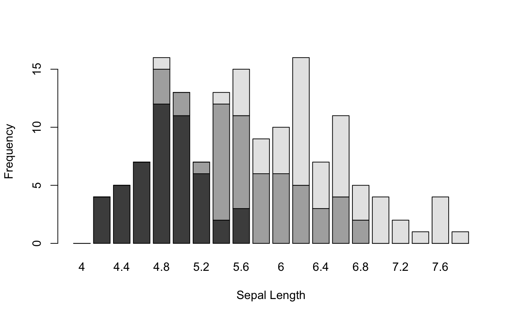
Stacked barplots may or may not be that informative, depending upon the complexity of your underlying data. It is helpful though to be able to stagger them. In the basic barplot() function allows you to specify the bars to be spaced beside each other as:
barplot(vals,xlab="Sepal Length", ylab="Frequency", col=c("red","green","blue"), beside=TRUE) legend(60, 10, c("I. setosa", "I. versicolor", "I. virginica"), fill = c("red", "green", "blue"), bty="n")
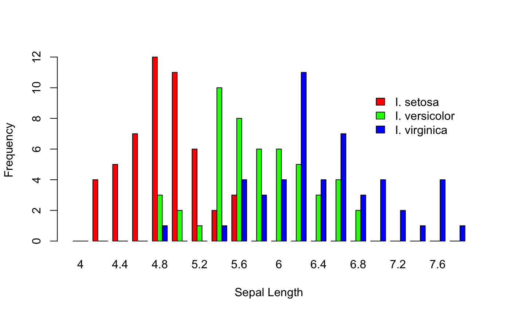
For plotting onto a barplot object, the x-axis number is not based upon the labels on the x-axis. It is an integer that relates to the number of bar-widths and separations. In this example, there are three bars for each category plus one separator (e.g., the area between two categories). So I had to plot the legend at 60 units on the x-coordinate, which puts it just after the 15th category (e.g., 15*4=60).
We can do the same thing with geom_histogram(), though again with a bit less typing involved. Here is the raw plot (which by default stacks just like in the barplot() example)
ggplot( iris, aes(x=Sepal.Length, fill=Species)) + geom_histogram()
## `stat_bin()` using `bins = 30`. Pick better value with `binwidth`.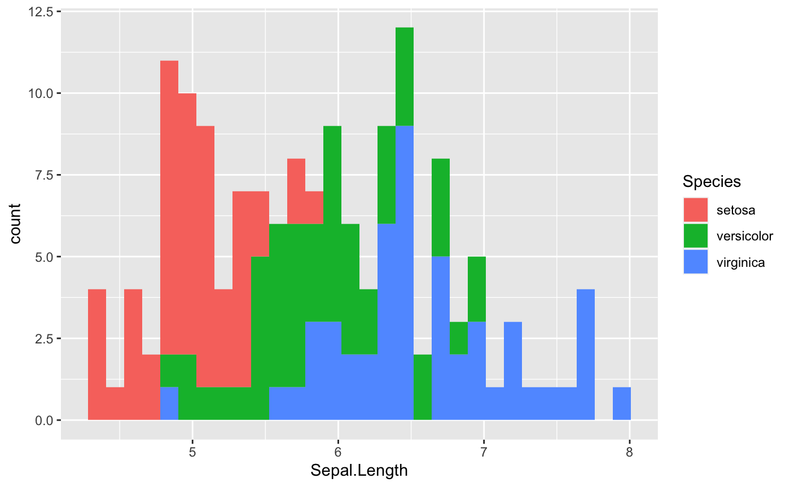
and the correspondingly staggered plot with bars positioned next to eachother.
ggplot( iris, aes(x=Sepal.Length, fill=Species)) + geom_histogram(position="dodge")
## `stat_bin()` using `bins = 30`. Pick better value with `binwidth`.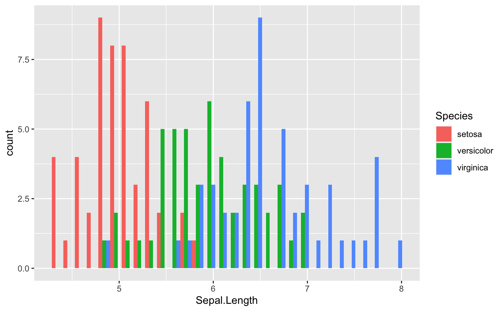
Notice how we add the fill color to the aes() function because the categories for assigning colors will be extracted from the data.frame, whereas when we just wanted to set them all light blue, the color is specified outside the aes() function. Also notice when we specify something to the aes() command in this way, we do not quote the name of the column, we call it just as if it were a normal variable.
3.2. Boxplots
Boxplots are a display of distributions of continuous data within categories, much like what we displayed in the previous staggered barplot. It is often the case that boxplots depict differences in mean values while giving some indication of the dispersal around that mean. This can be done in the staggered barplot as above but not quite as specifically.
The default display for boxplots in R provides the requires a factor and a numeric data type. The factor will be used as the categories for the x-axis on which the following visual components will be displayed:
- The median of the data for each factor,
- An optional 5% confidence interval (shown by passing notch=TRUE) around the mean.
- The inner 50th percentile of the data,
- Outlier data points.
Here is how the sepal length can be plot as a function of the Iris species.
boxplot(Sepal.Length ~ Species, data=iris, notch=TRUE, xlab="Species", ylab="Sepal Length (cm)", frame.plot=FALSE)
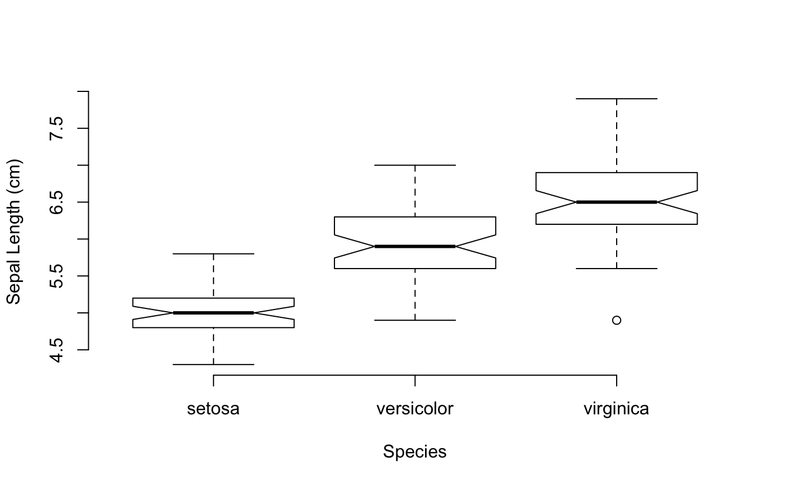
A couple of things should be noted on this plot call. First, I used a ‘functional’ form for the relationship between the continuous variable (Sepal.Length) and the factor (Species) with the response variable indicated on the left side of the tilde and the predictor variables on the right side. It is just as reasonable to use boxplot(Species,Sepal.Length, ...) in the call as x- and y- variables in the first two positions. However, it reads a bit better to do it as a function, like a regression. Also, it should be noted that I added the optional term, data=iris, to the call. This allowed me to reference the columns in the iris data.frame without the dollar sign notation. Without that I would have had to write boxplot( data$Sepal.Length ~ data$Species, ...), a much more verbose way of doing it but most programmers are relatively lazy and anything they can do to get more functionality out of less typing… Finally, I set frame.plot=FALSE to remove the box around the plot since the bty="n" does not work on boxplots (big shout out for consistency!). I don’t know why these are different, I just hate the box.
The corresponding ggplot approach is the same as the boxplot() one, we just have to specify the notch=TRUE in the geom_boxplot() function.
ggplot(iris, aes(x=Species, y=Sepal.Length)) + geom_boxplot(notch = TRUE) + xlab("Iris Species") + ylab("Sepal Width (cm)")
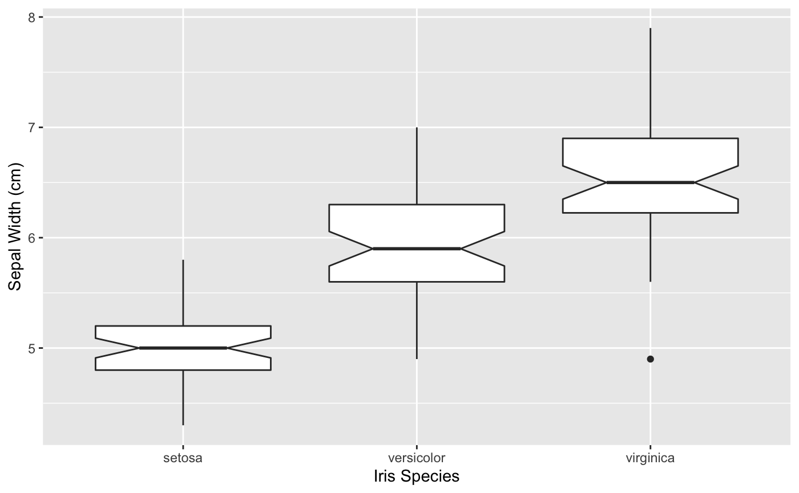
3.3. Scatter Plots
With two sets of continuous data, we can produce scatter plots. These consist of 2- (or 3-) coordinates where we can plot our data. With the addition of alternative colors (col=) and/or plot shapes (pch=) passed to the generic plot() command, we can make really informative graphical output. Here I plot two characteristics of the iris data set, sepal length and width, and use the species to indicate alternative symbols.
plot( iris$Sepal.Length, iris$Sepal.Width, pch=as.numeric(iris$Species), bty="n", xlab="Sepal Length (cm)", ylab="Sepal Width (cm)") legend( 6.75, 4.3, c("I. setosa", "I. versicolor", "I. virginica"), pch=1:3, bty="n")
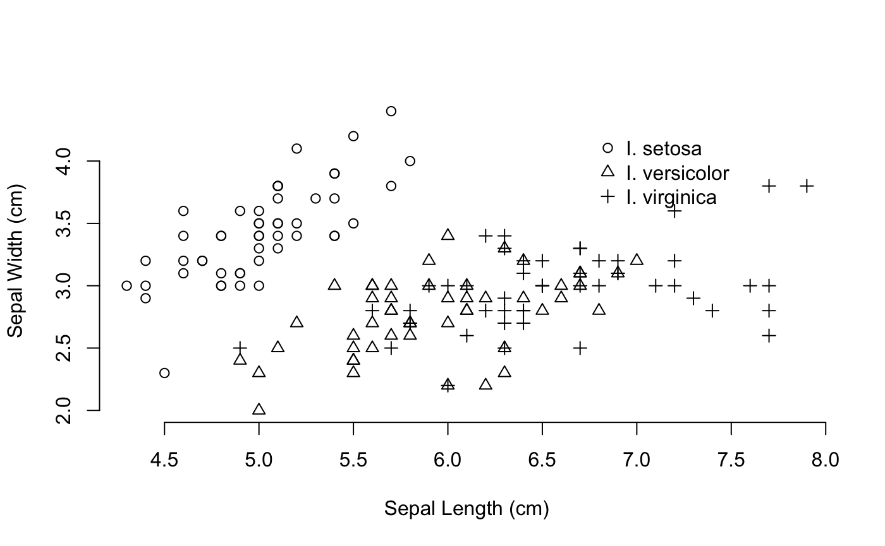
The call to pch= that I used coerced a factor into a numeric data type. By default, this will create a numeric sequence (starting at 1) for all levels of the factor, including ones that may not be in the data you are doing the conversion on. The parameter passed to pch is an integer that determines the shape of the symbol being plot. I typically forget which numbers correspond to which symbols (there are 25 of them in total ) and have to look them up when I need them. One of the easiest ways is just to plot them as:
plot(1:25,1:25,pch=1:25, bty="n", xlab="pch", ylab="pch")
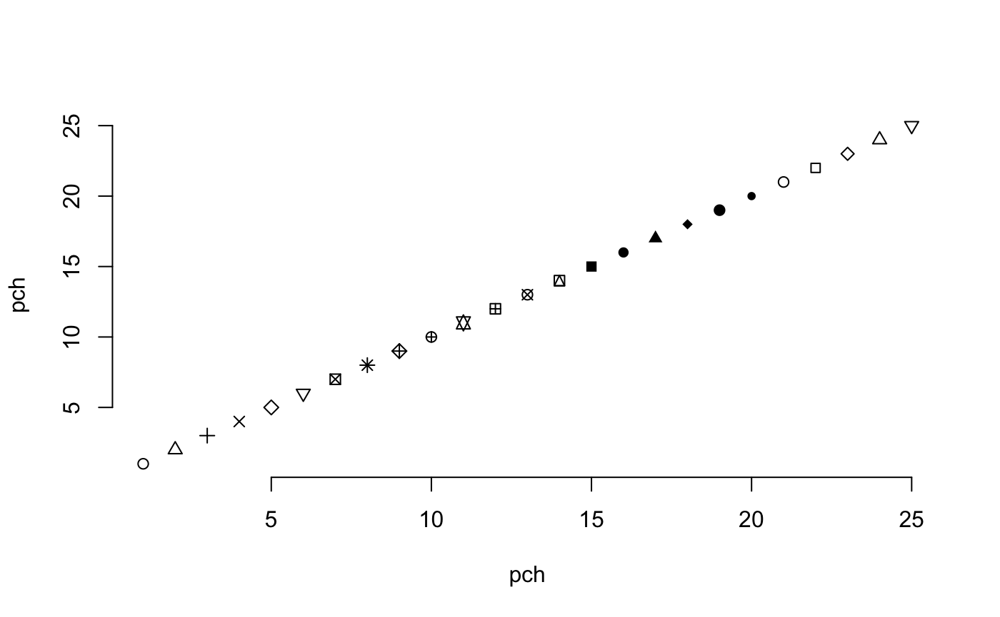
which produces the following figure where you can choose the appropriate symbols for your plotting needs.
A scatter plot in ggplot is created using the geom_point() layer.
ggplot(iris,aes(x=Sepal.Length,y=Sepal.Width, shape=Species)) + geom_point()
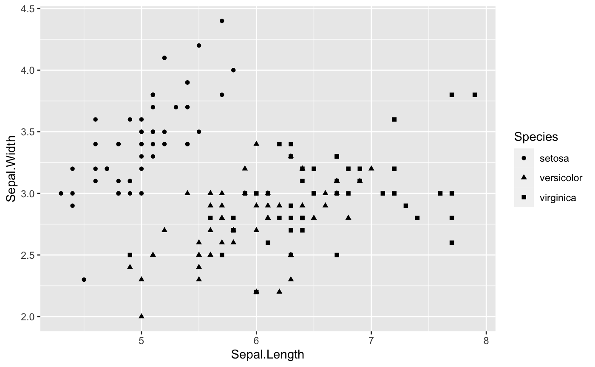
and the shapes are specified automatically.
4. Advanced plotting
4.1. Multiple Plots
The last figure was a bit confusing. You can see a few points where the three species have the same measurements for both sepal length and width—both I. versicolor and I. virginica have examples with sepal widths of 3.0cm and lengths of 6.7cm. For some of these it would be difficult to determine using a graphical output like this if there were more overlap. In this case, it may be a more informative approach to make plots for each species rather than using different symbols.
In ggplot, there is a facet geometry that can be added to a plot that can pull apart the individual species plots (in this case) and plot them either next to each other (if you are looking at y-axis differences), on top of each other (for x-axis comparisons), or as a grid (for both x- and y- axis comparisons). This layer is added to the plot using facet_grid() and take a functional argument (as I used for the boxplot example above) on which factors will define rows and columns of plots. Here is an example where I stack plots by species.
ggplot( iris, aes(x=Sepal.Width, y=Sepal.Length ) ) + geom_point() + facet_grid(Species~.) + xlab("Sepal Width (cm)") + ylab("Sepal Length")

The Species ~ . means that the rows will be defined by the levels indicatd in iris$Species and all the plotting (the period part) will be done as columns. If you have more than one factor, you can specify RowFactor ~ ColumnFactor and it will make the corresponding grid.
I would argue that this is a much more intuitive display of differences in width than the previous plot.
You can achieve a similar effect using built-in plotting functions as well. To do this, we need to mess around a bit with the plotting attributes. These are default parameters (hence the name par) for plotting that are used each time we make a new graphic. Here are all of them (consult with the previous Table for some of the meanings).
## [1] "xlog" "ylog" "adj" "ann" "ask" "bg"
## [7] "bty" "cex" "cex.axis" "cex.lab" "cex.main" "cex.sub"
## [13] "cin" "col" "col.axis" "col.lab" "col.main" "col.sub"
## [19] "cra" "crt" "csi" "cxy" "din" "err"
## [25] "family" "fg" "fig" "fin" "font" "font.axis"
## [31] "font.lab" "font.main" "font.sub" "lab" "las" "lend"
## [37] "lheight" "ljoin" "lmitre" "lty" "lwd" "mai"
## [43] "mar" "mex" "mfcol" "mfg" "mfrow" "mgp"
## [49] "mkh" "new" "oma" "omd" "omi" "page"
## [55] "pch" "pin" "plt" "ps" "pty" "smo"
## [61] "srt" "tck" "tcl" "usr" "xaxp" "xaxs"
## [67] "xaxt" "xpd" "yaxp" "yaxs" "yaxt" "ylbias"To create multiple plots on one graphic, we need to modify either the mfrow or mfcol property (either will do). They represent the number of figures to plot as a 2-integer vector for rows and columns. By default, it is set to
par()$mfrow
## [1] 1 1because there is only 1 row and 1 column in the plot. To change this, we simply pass a new value to the par() command and then do the plotting. In the following example, I plot the results of a linear model (lm()) function call. This returns four plots looking at the normality of the data, residuals, etc. This time, instead of seeing them one at a time, I’m going to plot all four into one figure.
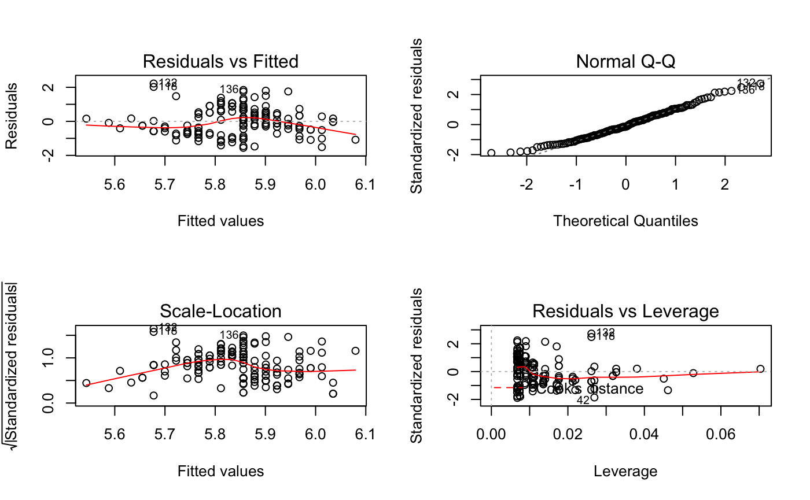
4.2. Color Palettes
The default plotting colors in R are black and white. However, there is a rich set of colors available for your plotting needs. The easiest set are named colors. At the time of this writing, there are
## [1] 657different colors available for your use. Not all are distinct as some overlap. However the benefit of these colors is that they have specific names, making it easier for you to remember than RGB or hex representations. Here are a random set of 20 color names.
colors()[ sample.int( length(colors()), size=20) ]
## [1] "grey38" "grey79" "sienna"
## [4] "gray95" "orchid1" "lavenderblush1"
## [7] "slateblue3" "orangered2" "wheat"
## [10] "mistyrose4" "gray81" "mediumblue"
## [13] "grey11" "gray62" "hotpink4"
## [16] "darkslategray1" "paleturquoise2" "mediumspringgreen"
## [19] "gray40" "khaki"To use these colors you can call them by name in the col= option to a plot. Here is an example where I define three named colors and then coerce the iris$Species variable into an integer to select the color by species and plot it in a scatter plot (another version of the pch= example previously).
colors <- c("royalblue1", "orange1", "green3") cols <- colors[ iris$Species ] plot( Sepal.Width ~ Sepal.Length, data=iris, col=cols, xlab="Sepal Length (cm)", ylab="Sepal Width (cm)", bty="n", pch=16)
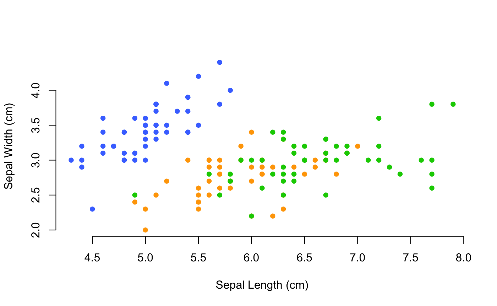
There is a lot of colors to choose from, and you are undoubtedly able to fit any color scheme on any presentation you may encounter.
In addition to named colors, there are color palettes available for you to grab the hex value for individual color along a pre-defined gradient. These colors ramps are:
-
rainbow(): A palette covering the visible spectrum
-
heat.colors(): A palette ranging from red, through orange and yellow, to white.
-
terrain.colors(): A palette for plotting topography with lower values as green and increasing through yellow, brown, and finally white.
-
topo.colors(): A palette starting at dark blue (water) and going through green (land) and yellow to beige (mountains).
-
cm.colors(): A palette going from light blue through white to pink.
and are displayed in the following figure.
The individual palette functions return the hex value for an equally separated number of colors along the palette, you only need to ask for the number of colors you are requesting. Here is an example from the rainbow() function.
rainbow(10)
## [1] "#FF0000FF" "#FF9900FF" "#CCFF00FF" "#33FF00FF" "#00FF66FF" "#00FFFFFF"
## [7] "#0066FFFF" "#3300FFFF" "#CC00FFFF" "#FF0099FF"4.3. RColorBrewer
The ggplot2 library has a slightly more interesting color palette, but it too is often a bit lacking. You have total control over the colors you produce and can specify them as RGB, hex (e.g. the way the web makes colors), or CMYK. You can also define your own color palettes.
To start, the RColorBrewer library provides several palettes for plotting either quantitative, qualitative, or divergent data. These three groups and the names of individual color palettes can be viewed as:
library(RColorBrewer) display.brewer.all()
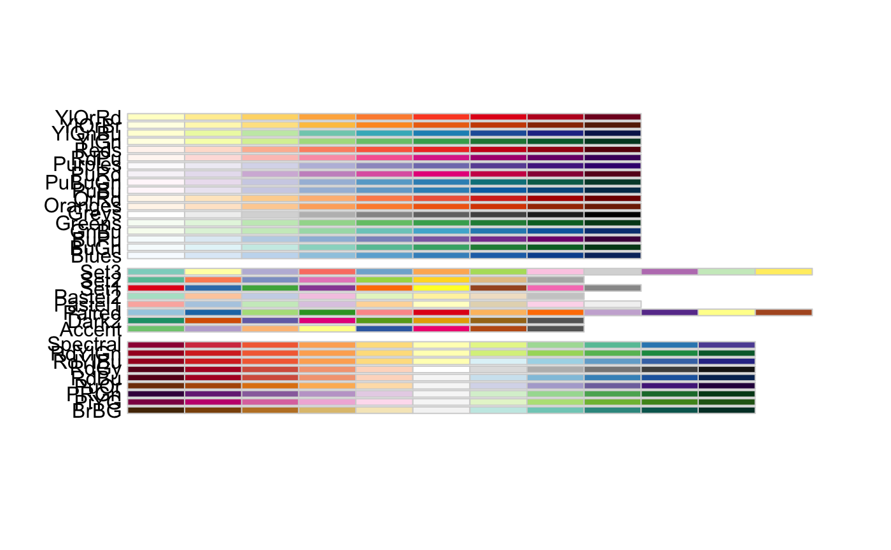
In ggplot, we can use these palettes as follows.
You can change the default palette in ggplot output adding the scale_color_brewer() (and scale_fill_brewer() if you are doing fill colors like in a barplot) to the plot. Here is an example where I change the default palette to the 6th divergent palette.
p <- ggplot(iris,aes(x=Sepal.Length,y=Sepal.Width, color=Species)) + geom_point() p <- p + xlab("Sepal Length (cm)") + ylab("Sepal Width (cm)") p + scale_color_brewer(type="div", palette=6)
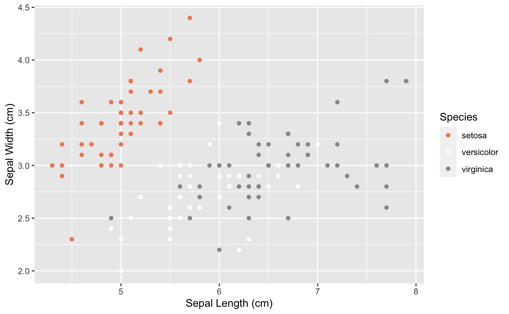
4.4. Saving Imagery
Creating a graphic for display on your screen is only the first step. For it to be truly useful, you need to save it to a file, often with specific parameters such as DPI or image size, so that you can use it outside of R.
For normal R graphics, you can copy the current graphical device to a file using dev.copy() or you can create a graphic file object and plot directly to it instead of the display. In both cases, you will need to make sure that you have your graphic formatted the way you like. Once you have the file configured the way you like, decide on the image format you will want. Common ones are jpg, png, tiff and pdf. Here are the function arguments for each of the formats.
Notes: png is preferred over jpg because jpg compression results in loss. The command ‘pdf’ does not take a ‘units’ argument, it assumes that the unit is inches. Only the most commonly used arguments are listed here, for further arguments, see the help file for each function.
jpeg(filename = "Rplot%03d.jpeg",
width = 480, height = 480, units = "px", pointsize = 12)
png(filename = "Rplot%03d.png",
width = 480, height = 480, units = "px", pointsize = 12,
bg = "white", res = 300)
tiff(filename = "Rplot%03d.tiff",
width = 480, height = 480, units = "px", pointsize = 12,
compression = "none", bg = "white")
pdf(file = "Rplot%03d.pdf",
width = 6, height = 6, pointsize = 12, bg = "white")These are the default values. If you need a transparent background, it is easiest to use the png file and set bg="transparent". If you are producing an image for a publication, you will most likely be given specific parameters about the image format in terms of DPI, pointsize, dimensions, etc. They can be set here.
To create the image, call the appropriate function above, and a file will be created for your plotting. You must then call the plotting functions to create your graphic. Instead of showing up in a graphical display window, they will instead be plot to the file. When done you must tell R that your plotting is now finished and it can close the graphics file. This is done by calling dev.off(). Here is an example workflow saving an image of a scatter plot with a smoothed line through it using ggplot.
png( filename = "MyCoolGraphic.png", quality=300, bg="transparent", width=1080, height=1080) ggplot( df, aes(x=PredictorVar, y=ResponseVar)) + geom_point() + stat_smooth(method="loess") + theme_bw() dev.off()
This will create a file MyCoolGraphic.png saved in the same folder as the current working directory.
To use dev.copy() instead, you first make the graphic and then copy the current graphic to a file. For this example, it would be:
ggplot( df, aes(x=PredictorVar, y=ResponseVar)) + geom_point() + stat_smooth(method="loess") + theme_bw() dev.copy(device=png,file="MyDevCopyGraphic.png") dev.off()
In general, I prefer the first method as it allows me to specify the specifics of the file in an easier fashion than the second approach.
If you are using ggplot2 graphics, there is a built-in function ggsave() that can also be used to save your currently displaying graphic (or others if you so specify) to file. Here are the specifics on that function call.
ggsave(filename = default_name(plot), plot = last_plot(), device = default_device(filename), path = NULL, scale = 1, width = par("din")[1], height = par("din")[2], units = c("in", "cm", "mm"), dpi = 300, limitsize = TRUE, ...)
Either approach will allow you to produce publication quality graphics.
4.5. Interactive Graphics
There are several other libraries available for creating useful plots in R. The most dynamical ones are based on javascript and as such are restricted to web or ebook displays. Throughout this book, I will be showing how you can use various libraries to create interactive content as well as providing some ‘widgets’ that will demonstrate how some feature of popualtion or landscape structure changes under a specified model. These widgets are also written in R and are hosted online as a shiny application. I would encourage you to look into creating dynamcial reports using these techniques, they can facilitate a better understanding of the underlying biology than static approaches.